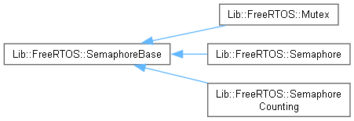
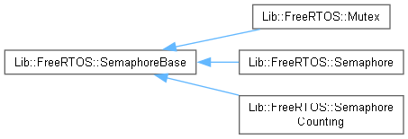

Lib::FreeRTOS
ver: 6.01
Free RTOS C++ Wrapper Library
Loading...
Searching...
No Matches
Class Hierarchy
Go to the textual class hierarchy


Generated on Sun Jan 12 2025 for Lib::FreeRTOS by
1.13.2